At Math Club we always encourage people to excel in mathematics regardless of what skill level they are at. Our member's mathematics courses range from regular courses to Advanced Placement and International Baccalaureate courses. With such a diversity of students, it's hard to find someone that has not taken a course that you are currently in. Math Club not only supports the surrounding community in developing mathematic skills, but pushes its members to a competitive level of problem solving.
Mr. Harding has taught at Millard North for 8 years and is currently the math department head and teaches Honors Pre-Calculus and IB Math Higher Level II. He has also been the math team coach for 8 years. He has a bachelor degree in mathematics from UNO and a masters in secondary math education from UNL. In his spare time, he loves solving (and sometimes failing) very difficult math problems. He also thinks the answer to every probability question is 50/50.
CONTACT INFO
ajharding@mpsomaha.org
I’m a senior here at MNHS, and I’ve been a member of Math Club since my freshman year. I’ve competed at numerous competitions, and am incredibly proud to be the current president of Math Club. My goal as president is to help this club grow and to make sure that every student at Millard North that has an interest in math is able to develop that interest and skill set while in a friendly environment. If you are considering joining, but are apprehensive at all, feel free to reach out! I hope to see you on Thursdays!
CONTACT INFO
ewahlgren951@millardps.org
I’m currently a senior at Millard North, and I’ve been attending Math Club for the past two years. I am currently taking IB Math HL II as my mathematics course but I can still help out if anyone needs help in algebra or geometry! For the past two years I have been working on many other coding projects and feel highly honoured to be able to develop this one as well.
Cheers,
The Dev
CONTACT INFO
cnguyen532@millardps.org
Club meetings occur every Thursday of the week. The official starting time of the meetings are at 3:30 PM, but sometimes we like to start things a little bit early and begin the club meeting right after seventh hour ends. Club meetings regularly occur in Mr. Harding's classroom - Room 1157 (the first classroom on the right side lower level). Feel free to swing by to join in on fun games or complex mathematics! Meetings tend to end either at 4:30 PM or 5:00 PM so plan accordingly!
There are some rare times when we have to cancel weekly meetings due to some conflicting circumstances. Some of these circumstances are when the sponsor is not currently in the building or is at a department meeting. If you are uncertain about the status of an upcoming meeting, please come see either our sponsor, Mr. harding, or our current club president, Elisabeth Wahlgren.
In November, we compete at the University of Nebraska-Lincoln for their annual Math Day Competition. This mathematics competition is for any school across the state. At this competition individuals compete for placement in the Probe I examination as well as being able to participate in a Quiz Bowl Team to contest against other school's teams.
♢ Ranked Second (overall) - Probe I Test
♢ Ranked Third - Quiz Bowl Competition (Class A)
In February, we take the national American Mathematics Competition (AMC) exam. In 2016, we had two students (Khoa Nguyen and Anishansu Pradhan) qualify for the American Invitational Mathematics Examination (AIME) based on their scores from the AMC Qualification Examination.
♢ 40 Students - AMC10 Examination
♢ 50 Students - AMC12 Examination
♢ 6 Students - AMC12A Examination
♢ 2 Students - AIM Examination